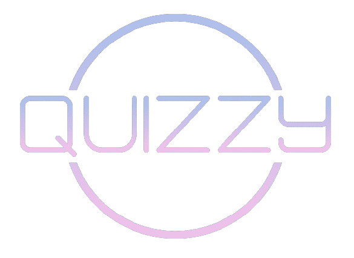

<nav class=" bg-white w-full flex relative justify-between items-center mx-auto px-8 h-20">
    <!-- logo -->
    <div class="inline-flex">
        <a class="_o6689fn" href="/">
            <div class="hidden md:block">
                
            </div>
            <div class="hidden md:hidden">
                
            </div>
        </a>
    </div>

    <!-- end logo -->

    <!-- search bar -->
    <div [hidden]="hideSearchBar" class="hidden sm:block flex-shrink flex-grow-0 justify-start px-2">
        <div class="inline-block">
            <div class="inline-flex items-center max-w-full">
                <div class="block flex-grow flex-shrink overflow-hidden">
                    <input type="text" id="default-search"
                        class="flex items-center flex-grow-0 flex-shrink pl-2 relative w-60 border rounded-full px-1  py-1"
                        placeholder="Rechercher un quiz ..." required name="search" [(ngModel)]="searchTerm"
                        (ngModelChange)="search()">
                </div>
                <button class="search-icon">
                    <mat-icon mat-icon-button>search</mat-icon>
                </button>
            </div>
        </div>
    </div>
    <!-- end search bar -->

    <!-- login -->
    <div class="flex-initial">
        <div class="flex justify-end items-center relative">
            <div class="flex mr-4 items-center">
                <div class="block relative" routerLink="/quiz/create" routerLinkActive="active"
                    ariaCurrentWhenActive="page">
                    <button type="button" class="add_to_queue inline-block rounded-full relative ">
                        <mat-icon class="add_to_queue">add_to_queue</mat-icon>
                    </button>
                </div>
            </div>
            <div class="flex mr-4 items-center">
                <div class="block relative" routerLink="/connexion" routerLinkActive="active"
                    ariaCurrentWhenActive="page">
                    <button type="button" class="people-logo inline-block rounded-full relative ">
                        <mat-icon class="people-logo">account_circle</mat-icon>
                    </button>
                </div>
            </div>
        </div>

    </div>
    <!-- end login -->
</nav>